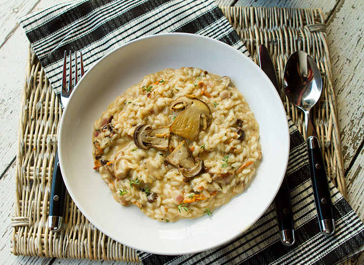

Lasagna Recipe
Home

Description
This Mushroom, mascarpone and rosemary risotto dish is perfect for sharing with friends or family. It's full of rich flavours like salty Parmesan, creamy mascarpone and nutty chestnut mushrooms,
and is ideal paired with a lemony green salad
Ingredients
- 2 tbsp olive oil
- 1 onion, finely diced
- 2 celery sticks, finely chopped
- 250g (8oz) chestnut mushrooms, half chopped, half thinly sliced
- 2 garlic cloves, finely chopped
- 350g (12oz) risotto rice
- 200ml (1/3pt) white wine
- 1 litre (1 3/4pt) hot vegetable stock
- 2 tbsp mascarpone
- 25g (1oz) vegetarian hard cheese or Parmesan, grated
- 2 tbsp chopped fresh flat-leaf parsley, leaves only
Steps
- In a large pan, heavy-bottomed pan, heat 1 tbsp of olive oil.
- Add the onion and celery and cook, over a medium heat,
for 6 minutes, or until softened.
- Add the chopped mushrooms and cook for 3-4 minutes.
- Add the garlic and rosemary and fry for 1 minute more
- Stir in the rice with a wooden spoon, ensuring all the grains are coated.
- Add the wine and simmer for 2 minutes.
- Add the hot stock, a ladleful at a time, stirring until the liquid is almost
absorbed before adding the next. Repeat until all the stock
is used and the rice is al dente.
- Meanwhile, heat the remaining olive oil in a separate frying pan.
Add the sliced mushrooms and gently fry for 3 minutes, or until golden.
- Stir the fried mushrooms, mascarpone and Parmesan into the cooked rice